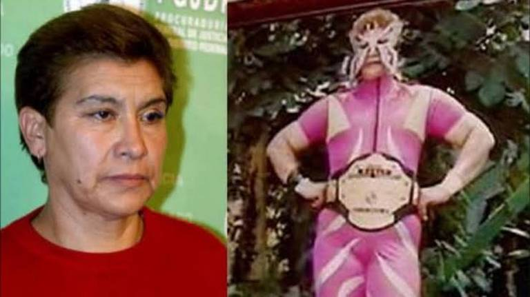

Asesinos de México
La Mataviejitas
Jueana Barraza Samperio, ex luchadora profesional y asesina en serie mexicana condenada a 759 años de prision por el homicidio de 16 ancianas, crimentes reizados en el area metropolitana de Ciudad de méxico desde los años 90´s hasta principios de 2006
El metodo que tenia era que entraba a las casas, vestida de enfermera e iba a platicarle de parte instituciones gubernamentales sobre promeciones de estos, y en el momento mas inesperado, atacaba a las ancianas con una llave de lucha. Se calcula que asesino al rededor de 47 señoras pero solo es culpada de 16 asesinatos.
El Monstruo de Ecatepec
Juan Carlos Hernández Bejar y Patricia Martínez Bernal,no solamente secuestraron ,violaron ,sercenaron, degollaron, deboraron y acabaron con la vida d mas de 20 mujeres desde el 2008 hasta el 2018 en Ecatepec de Morelos, Estado de México. La razon por la que no se capturo con tiempo no fue solo por la neglijencia de la policia, sino, por que la desaparicion de mujeres era y es algo muy comun en esta zona.
Su metodo era que Patricia convencia a las mujeres de ir a su casa para venderles cosas; cuando lograba esto, agarraba a sus hijos y se los llevaba a dar una vuelta mientras que Juan Carlos tomaba a la victima, las abusaba, las degollaba y las sersenaba; al acabar de hacer esto, Patricia llegaba, le ayudaba a limpiar todo y al final cocinaban piezas de carne que quedaban en la casa.